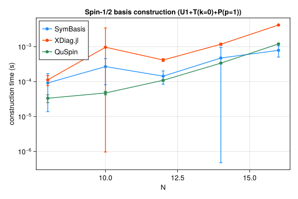
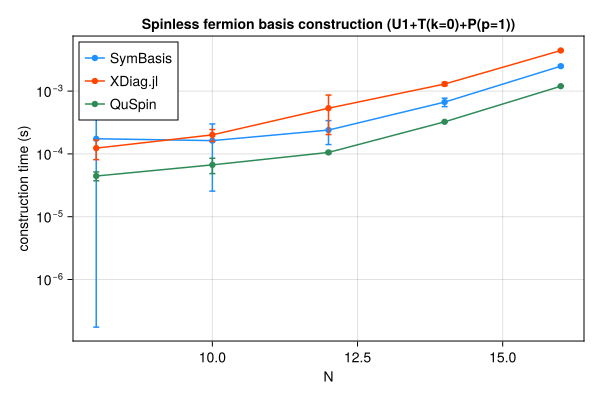
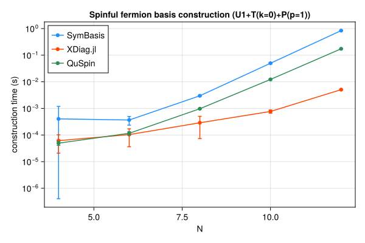
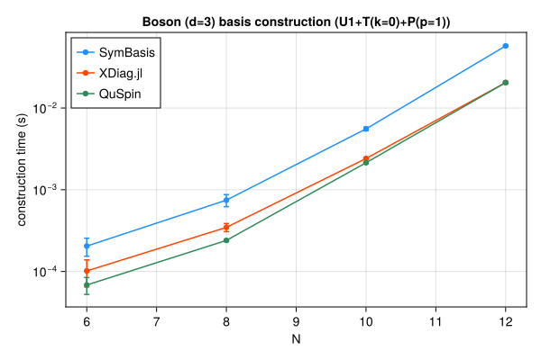

Symmetry-resolved basis construction and representative-state lookup speed, compared against XDiag.jl and QuSpin. SymBasis is benchmarked against its own dev checkout; XDiag.jl and QuSpin are whatever their latest released versions were at the time this page was generated. Regenerated automatically on every SymBasis release.
Threads are left at each library's own defaults (JULIA_NUM_THREADS=auto, OMP_NUM_THREADS unset) rather than pinned to 1 – these numbers reflect out-of-the-box performance, not a strictly single-threaded comparison.
Sweep: BENCH_SWEEP=quick
plot_construction("spin", "Spin-1/2")

| N | config | dim | SymBasis | XDiag | QuSpin | XDiag/SymBasis | QuSpin/SymBasis |
|---|
| 8 | U1 | 70 | 3.306e-05 ± 4.2e-05 s | 4.937e-06 ± 7.4e-06 s | 2.526e-05 ± 1.3e-05 s | 0.15x | 0.76x |
| 8 | U1+T(k=0) | 10 | 4.173e-05 ± 2.9e-05 s | 5.404e-05 ± 3.4e-05 s | 2.937e-05 ± 9.1e-06 s | 1.30x | 0.70x |
| 8 | U1+T(k=0)+P(p=1) | 8 | 9.162e-05 ± 7.8e-05 s | 0.0001124 ± 3.6e-05 s | 3.341e-05 ± 8.5e-06 s | 1.23x | 0.36x |
| 10 | U1 | 252 | 0.0003044 ± 0.00024 s | 5.234e-06 ± 7.8e-06 s | 2.268e-05 ± 4.2e-06 s | 0.02x | 0.07x |
| 10 | U1+T(k=0) | 26 | 0.0004947 ± 0.00013 s | 9.218e-05 ± 3.6e-05 s | 4.192e-05 ± 9.9e-06 s | 0.19x | 0.08x |
| 10 | U1+T(k=0)+P(p=1) | 16 | 0.0002692 ± 0.00019 s | 0.0009649 ± 0.0025 s | 4.73e-05 ± 5.5e-06 s | 3.58x | 0.18x |
| 12 | U1 | 924 | 0.0003746 ± 0.00044 s | 5.38e-06 ± 8e-06 s | 3.112e-05 ± 5.5e-06 s | 0.01x | 0.08x |
| 12 | U1+T(k=0) | 80 | 8.139e-05 ± 5.2e-05 s | 0.0002486 ± 3.7e-05 s | 7.767e-05 ± 7.1e-06 s | 3.05x | 0.95x |
| 12 | U1+T(k=0)+P(p=1) | 50 | 0.0001433 ± 5.9e-05 s | 0.0004155 ± 3.8e-05 s | 0.000109 ± 6.8e-06 s | 2.90x | 0.76x |
| 14 | U1 | 3432 | 0.0001863 ± 0.00029 s | 6.272e-06 ± 8.2e-06 s | 5.495e-05 ± 6.1e-06 s | 0.03x | 0.30x |
| 14 | U1+T(k=0) | 246 | 0.000329 ± 0.00032 s | 0.001301 ± 0.0015 s | 0.0002192 ± 6.7e-06 s | 3.95x | 0.67x |
| 14 | U1+T(k=0)+P(p=1) | 133 | 0.0004747 ± 0.0005 s | 0.001175 ± 7.7e-05 s | 0.0003383 ± 1.4e-05 s | 2.47x | 0.71x |
| 16 | U1 | 12870 | 0.0005105 ± 0.00031 s | 8.399e-06 ± 1.1e-05 s | 0.0001461 ± 7.6e-06 s | 0.02x | 0.29x |
| 16 | U1+T(k=0) | 810 | 0.0004131 ± 0.00011 s | 0.003461 ± 7.8e-05 s | 0.0007623 ± 1.6e-05 s | 8.38x | 1.85x |
| 16 | U1+T(k=0)+P(p=1) | 440 | 0.0007871 ± 0.00028 s | 0.004176 ± 5.6e-05 s | 0.001201 ± 1.3e-05 s | 5.31x | 1.53x |
| N | config | nsamples | SymBasis | XDiag | QuSpin |
|---|
| 16 | U1+T(k=0)+P(p=1) | 10000 | 1.104e-07 ± 5.8e-09 s | N/A (no decoupled API) | 2.105e-07 ± 2.7e-09 s |
plot_construction("fermion", "Spinless fermion")

| N | config | dim | SymBasis | XDiag | QuSpin | XDiag/SymBasis | QuSpin/SymBasis |
|---|
| 8 | U1 | 70 | 3.134e-05 ± 3.7e-05 s | 5.007e-06 ± 7.9e-06 s | 3.305e-05 ± 1.1e-05 s | 0.16x | 1.05x |
| 8 | U1+T(k=0) | 9 | 0.0005437 ± 0.00069 s | 5.229e-05 ± 3.3e-05 s | 4.108e-05 ± 6.5e-06 s | 0.10x | 0.08x |
| 8 | U1+T(k=0)+P(p=1) | 6 | 0.0001742 ± 0.00022 s | 0.0001237 ± 4.3e-05 s | 4.449e-05 ± 7.2e-06 s | 0.71x | 0.26x |
| 10 | U1 | 252 | 0.0001496 ± 0.00022 s | 5.487e-06 ± 8.2e-06 s | 3.287e-05 ± 3.9e-06 s | 0.04x | 0.22x |
| 10 | U1+T(k=0) | 26 | 0.0002059 ± 0.00013 s | 0.0001554 ± 0.0002 s | 5.325e-05 ± 6.1e-06 s | 0.75x | 0.26x |
| 10 | U1+T(k=0)+P(p=1) | 16 | 0.0001629 ± 0.00014 s | 0.0002012 ± 4.4e-05 s | 6.695e-05 ± 1.8e-05 s | 1.23x | 0.41x |
| 12 | U1 | 924 | 0.000257 ± 0.00054 s | 6.523e-06 ± 8.5e-06 s | 4.035e-05 ± 5.2e-06 s | 0.03x | 0.16x |
| 12 | U1+T(k=0) | 76 | 0.0001069 ± 4.2e-05 s | 0.003704 ± 0.0072 s | 7.522e-05 ± 5.8e-06 s | 34.66x | 0.70x |
| 12 | U1+T(k=0)+P(p=1) | 33 | 0.0002399 ± 9.9e-05 s | 0.0005347 ± 0.00033 s | 0.0001057 ± 4.5e-06 s | 2.23x | 0.44x |
| 14 | U1 | 3432 | 0.0003288 ± 0.00024 s | 6.576e-06 ± 8.2e-06 s | 5.633e-05 ± 4.6e-06 s | 0.02x | 0.17x |
| 14 | U1+T(k=0) | 246 | 0.0003359 ± 4.8e-05 s | 0.004576 ± 0.0076 s | 0.0002164 ± 6.3e-06 s | 13.62x | 0.64x |
| 14 | U1+T(k=0)+P(p=1) | 113 | 0.0006691 ± 0.0001 s | 0.001298 ± 8e-05 s | 0.0003247 ± 5.3e-06 s | 1.94x | 0.49x |
| 16 | U1 | 12870 | 0.0004375 ± 0.00015 s | 1.093e-05 ± 1.2e-05 s | 0.0001479 ± 7.6e-06 s | 0.02x | 0.34x |
| 16 | U1+T(k=0) | 809 | 0.001189 ± 0.00016 s | 0.003949 ± 7.8e-05 s | 0.0007394 ± 7e-06 s | 3.32x | 0.62x |
| 16 | U1+T(k=0)+P(p=1) | 422 | 0.002499 ± 9.2e-05 s | 0.004437 ± 0.0001 s | 0.001198 ± 8.9e-06 s | 1.78x | 0.48x |
| N | config | nsamples | SymBasis | XDiag | QuSpin |
|---|
| 16 | U1+T(k=0)+P(p=1) | 10000 | 1.488e-06 ± 7.1e-09 s | N/A (no decoupled API) | 2.063e-06 ± 1.2e-08 s |
plot_construction("spinful_fermion", "Spinful fermion")

| N | config | dim | SymBasis | XDiag | QuSpin | XDiag/SymBasis | QuSpin/SymBasis |
|---|
| 4 | U1 | 36 | 0.0003552 ± 0.00086 s | 6.639e-06 ± 9.1e-06 s | 3.939e-05 ± 1e-05 s | 0.02x | 0.11x |
| 4 | U1+T(k=0) | 10 | 6.582e-05 ± 3.6e-05 s | 3.876e-05 ± 4.2e-05 s | 4.553e-05 ± 8.8e-06 s | 0.59x | 0.69x |
| 4 | U1+T(k=0)+P(p=1) | 6 | 0.0004039 ± 0.00079 s | 6.149e-05 ± 4.1e-05 s | 4.94e-05 ± 8.4e-06 s | 0.15x | 0.12x |
| 6 | U1 | 400 | 0.000715 ± 0.00063 s | 5.81e-06 ± 9.6e-06 s | 4.465e-05 ± 6.5e-06 s | 0.01x | 0.06x |
| 6 | U1+T(k=0) | 68 | 0.0002158 ± 7e-05 s | 5.127e-05 ± 3.6e-05 s | 8.57e-05 ± 4.7e-06 s | 0.24x | 0.40x |
| 6 | U1+T(k=0)+P(p=1) | 38 | 0.0003666 ± 0.00013 s | 0.0001038 ± 6.8e-05 s | 0.0001163 ± 1.7e-05 s | 0.28x | 0.32x |
| 8 | U1 | 4900 | 0.00102 ± 0.00058 s | 6.227e-06 ± 9e-06 s | 0.0001169 ± 1.5e-05 s | 0.01x | 0.11x |
| 8 | U1+T(k=0) | 618 | 0.001734 ± 0.00012 s | 0.0003025 ± 0.00063 s | 0.0005617 ± 1.4e-05 s | 0.17x | 0.32x |
| 8 | U1+T(k=0)+P(p=1) | 318 | 0.002981 ± 0.00012 s | 0.0002886 ± 0.00022 s | 0.000972 ± 1.4e-05 s | 0.10x | 0.33x |
| 10 | U1 | 63504 | 0.007954 ± 0.00033 s | 6.685e-06 ± 9.6e-06 s | 0.001079 ± 1.1e-05 s | 0.00x | 0.14x |
| 10 | U1+T(k=0) | 6352 | 0.02887 ± 0.0019 s | 0.0003366 ± 3.7e-05 s | 0.007132 ± 9.4e-05 s | 0.01x | 0.25x |
| 10 | U1+T(k=0)+P(p=1) | 3212 | 0.04981 ± 0.0022 s | 0.0007679 ± 0.0001 s | 0.01228 ± 0.00013 s | 0.02x | 0.25x |
| 12 | U1 | 853776 | 0.1369 ± 0.025 s | 7.577e-06 ± 1e-05 s | 0.016 ± 0.00012 s | 0.00x | 0.12x |
| 12 | U1+T(k=0) | 71188 | 0.4846 ± 0.0087 s | 0.002231 ± 6.9e-05 s | 0.09891 ± 0.00016 s | 0.00x | 0.20x |
| 12 | U1+T(k=0)+P(p=1) | 35694 | 0.8381 ± 0.023 s | 0.005077 ± 0.00014 s | 0.1737 ± 0.00037 s | 0.01x | 0.21x |
| N | config | nsamples | SymBasis | XDiag | QuSpin |
|---|
| 12 | U1+T(k=0)+P(p=1) | 10000 | 1.289e-05 ± 2.1e-08 s | N/A (no decoupled API) | 2.472e-06 ± 1.9e-08 s |
plot_construction("boson", "Boson (d=3)")

| N | config | dim | SymBasis | XDiag | QuSpin | XDiag/SymBasis | QuSpin/SymBasis |
|---|
| 6 | U1 | 141 | 0.0001782 ± 0.00024 s | 5.849e-06 ± 8e-06 s | 4.579e-05 ± 1.3e-05 s | 0.03x | 0.26x |
| 6 | U1+T(k=0) | 26 | 0.0001509 ± 6.4e-05 s | 6.035e-05 ± 3e-05 s | 5.746e-05 ± 8.6e-06 s | 0.40x | 0.38x |
| 6 | U1+T(k=0)+P(p=1) | 18 | 0.0002044 ± 5.1e-05 s | 0.0001015 ± 3.7e-05 s | 6.832e-05 ± 1.6e-05 s | 0.50x | 0.33x |
| 8 | U1 | 1107 | 0.0003808 ± 0.00064 s | 7.509e-06 ± 8e-06 s | 7.818e-05 ± 6.6e-06 s | 0.02x | 0.21x |
| 8 | U1+T(k=0) | 142 | 0.000647 ± 0.00049 s | 0.001376 ± 0.0036 s | 0.0001959 ± 1.8e-05 s | 2.13x | 0.30x |
| 8 | U1+T(k=0)+P(p=1) | 84 | 0.0007465 ± 0.00013 s | 0.0003465 ± 4e-05 s | 0.0002399 ± 8.5e-06 s | 0.46x | 0.32x |
| 10 | U1 | 8953 | 0.001442 ± 0.00064 s | 1.468e-05 ± 1.2e-05 s | 0.0003072 ± 6e-06 s | 0.01x | 0.21x |
| 10 | U1+T(k=0) | 902 | 0.003761 ± 0.00031 s | 0.001889 ± 4e-05 s | 0.001603 ± 3.3e-05 s | 0.50x | 0.43x |
| 10 | U1+T(k=0)+P(p=1) | 486 | 0.005556 ± 0.00028 s | 0.002414 ± 5.8e-05 s | 0.002141 ± 4e-05 s | 0.43x | 0.39x |
| 12 | U1 | 73789 | 0.01028 ± 0.00051 s | 3.412e-05 ± 1.1e-05 s | 0.002372 ± 6.2e-05 s | 0.00x | 0.23x |
| 12 | U1+T(k=0) | 6166 | 0.0394 ± 0.0024 s | 0.01821 ± 0.0013 s | 0.01552 ± 9.8e-05 s | 0.46x | 0.39x |
| 12 | U1+T(k=0)+P(p=1) | 3179 | 0.05761 ± 0.0017 s | 0.0205 ± 0.00076 s | 0.02049 ± 0.0001 s | 0.36x | 0.36x |
| N | config | nsamples | SymBasis | XDiag | QuSpin |
|---|
| 12 | U1+T(k=0)+P(p=1) | 10000 | 7.168e-06 ± 2.7e-08 s | N/A (no decoupled API) | 3.871e-07 ± 9.6e-09 s |